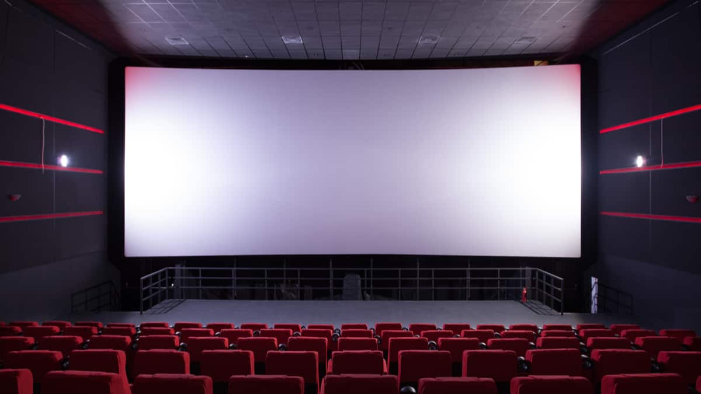

cinema
Embora não seja claro onde realmente começou a história do cinema, a primeira exibição de um filme de curta duração aconteceu no Salão Grand Café, em Paris, em 28 de dezembro de 1895. Nesta data, os Irmãos Lumière fizeram uma apresentação pública dos produtos de seu invento ao qual chamaram de Cinematógrafo. O evento causou comoção nos 30 e poucos presentes, a notícia se alastrou e, em pouco tempo, este fazer artístico conquistaria o mundo e faria nascer uma indústria multibilionária. O filme exibido foi L'Arrivée d'un Train à La Ciotat.[1]
"La Sortie de l'usine Lumière à Lyon", dos Irmãos Lumière.
O cinema baseia-se em projeções públicas de imagens animadas. O cinema nasceu de várias inovações que vão desde do domínio fotográfico até a síntese do movimento. A esta foi atribuída como causa a persistência da visão ou "persistência retiniana", por teóricos renomados e importantes. Mas o efeito de movimento do cinema não pode ser explicado pela "persistência retiniana" , onde na verdade, acontece em nível neural, já posterior à fase da retina no processo de percepção visual. Hugo Münsterberg, psicólogo e um dos primeiros teóricos do cinema, já negava, em 1916, a possibilidade do efeito de movimento produzido no cinema resultar de fenômenos retinianos. Münsterberg acreditava (e estava certo) que tudo acontecia na fase neural do processo de percepção visual, e deu ao fenômeno o nome de "Phi" (Fenômeno phi). Dentre os jogos óticos inventados vale a pena destacar o thaumatrópio (inventado entre 1820 e 1825 por John Ayrton Paris), Fenacistoscópio (1828-1832) por Joseph-Antoine Ferdinand Plateau, zootrópio (em 1828-1832 por William George Horner), praxinoscópio (em 1877) e o Estroboscópio (1828-1832 por Simon von Stampfer). Em 1888, Charles-Émile Reynaud melhorou sua invenção e começou projetar imagens no Musée Grévin durante 10 anos.
Em 1876, Eadweard Muybridge fez uma experiência: primeiro colocou 12 e depois 24 câmeras fotográficas ao longo de um hipódromo e tirou várias fotos da passagem de um cavalo. Ele obteve assim a decomposição do movimento em várias fotografias e através de um zoopraxiscópio pode recompor o movimento. Em 1882, Étienne-Jules Marley melhorou o aparelho de Muybridge. Em 1888, Louis Aimée Augustin Le Prince filmou uma cena de cerca de 2 segundos mas a fragilidade do papel utilizado fez com que a projeção ficasse inadequada.
William Kennedy Laurie Dickson, chefe engenheiro da Edison Laboratories, inventou uma tira de celuloide contendo uma sequência de imagens que seria a base para fotografia e projeção de imagens em movimento. Em 1891, Thomas Edison inventou o cinetógrafo e posteriormente o cinetoscópio. O último era uma caixa movida a eletricidade que continha a película inventada por Dickson mas com funções limitadas. O cinetoscópio não projetava o filme.
Programa da primeira exibição.
Baseado na invenção de Edison, Auguste e Louis Lumière inventaram o cinematógrafo, um aparelho portátil que consistia num aparelho três em um (máquina de filmar, de revelar e projetar). Em 1895, o pai dos irmãos Lumière, Antoine, organizou uma exibição pública paga de filmes no dia 28 de dezembro no Salão do Grand Café de Paris. A exposição foi um sucesso. Este dia, data da primeira projeção pública paga, é comumente conhecida como o nascimento do cinema mesmo que os irmãos Lumière não tenham reivindicado para si a invenção de tal feito. Porém, as histórias americanas atribuem um maior peso a Thomas Edison pela invenção do cinema, quando na verdade o que ele fez foi pegar pequenos vídeos e exibi-los em maquinas caça-níquel, e para não perder tal fonte lucrativa sempre foi contra a exibição dos filmes em grandes salas.
Os irmãos Lumière enviaram ao mundo, a fim de apresentar pequenos filmes, os primeiros registros como um início do cinema amador. "Sortie de l'usine Lumière à Lyon" (ou "Empregados deixando a Fábrica Lumière") é tido como o primeiro audiovisual exibido na história, sendo dirigido e produzido por Louis Lumière. Do mesmo ano, ainda dos irmãos Lumière o filme L'Arroseur Arrosé, uma pequena comédia. Menos de 6 meses depois, Edison projetaria seu primeiro filme, "Vitascope".
Experiência de Eadweard Muybridge
.jpeg)